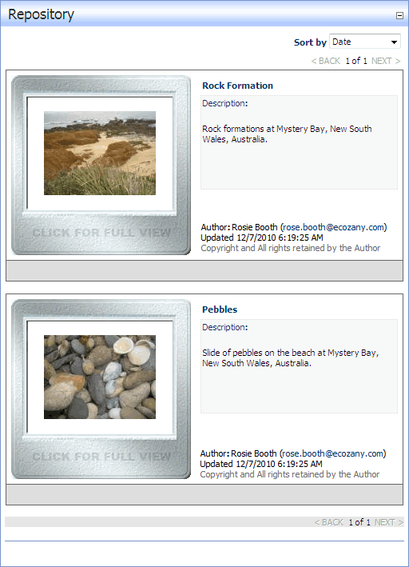

By applying the Slides skin, the Repository module can be used to display a list of images inside frames that looks like traditional slides. Each listing displays an image thumbnail, description, author name, the date and time when the slide was last updated, and a copyright notice. The author's email address can optionally be displayed. Users can click on the image thumbnail to view the full size image in a new Web browser.
Ratings and comments are enabled on this skin.

The Slides Repository